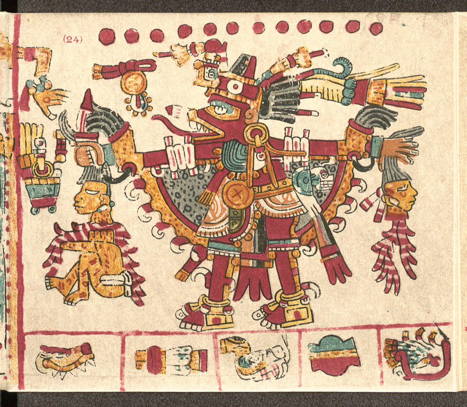

Codex Vaticanus

- Find Name
- Codex Vaticanus
- Historical Period
- Roman
- Artifact Date
- 4th century AD (c. AD 300–350)
- Date Discovered
- 1475
- Discovery Location
- Vatican Library, Vatican City
- Current Location
- Vatican Library, Vatican City
- Timeline Era
- Early Church
- Description
- One of the oldest nearly complete Bibles in the world, written in Greek in the fourth century and first recorded in a Vatican Library catalogue in 1475; its earlier history is unknown. It contains most of the Old and New Testaments and is, with Sinaiticus, one of the two pillars of modern New Testament scholarship.
- Biblical Significance
- For centuries this manuscript sat in the Vatican's library while the church read the Bible in Latin translation — and when scholars finally compared it with the received text, it confirmed how carefully the Greek New Testament had been preserved. Two fourth-century Bibles, kept a thousand miles apart, agree with each other and with the Bibles in our hands.
- Evidence Class
- Direct
- Interpretations
- Scholars agree Vaticanus is a genuine fourth-century Bible; its early history before 1475 is unknown, and a few leaves are missing.
- Scripture Illuminated
Awaiting Review Not yet checked against scholarly sources. Treat its claims as provisional until this entry is reviewed. About verification
Last reviewed: not yet reviewed